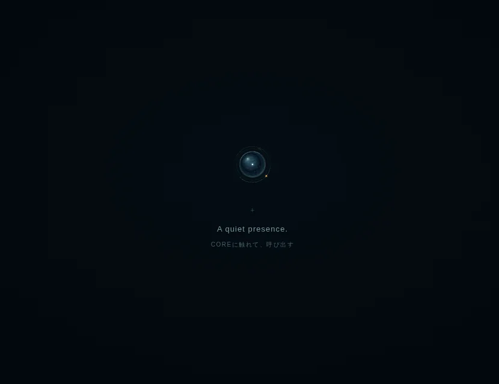
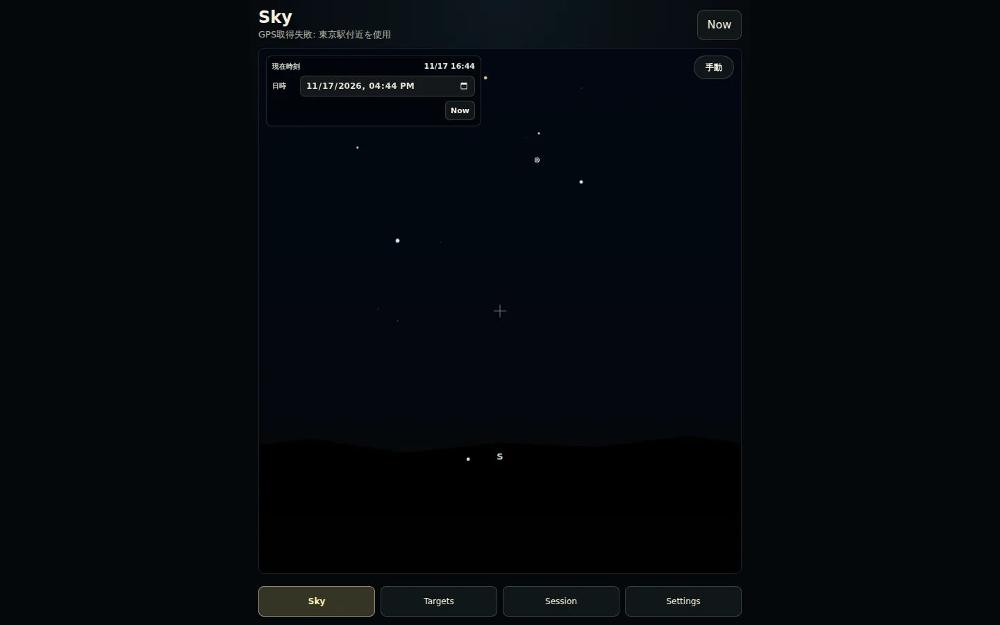
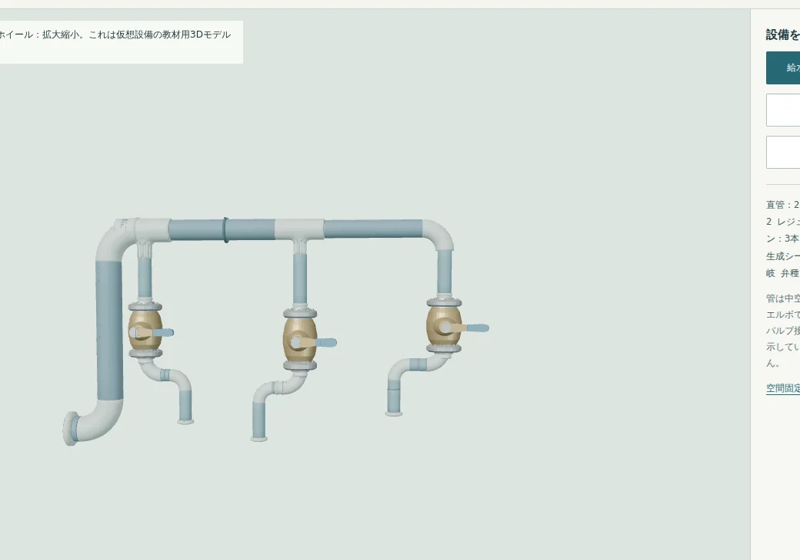
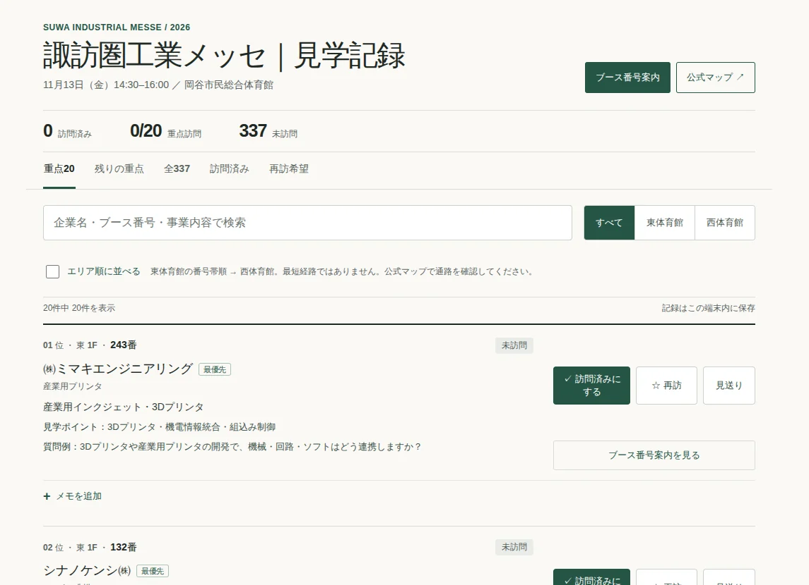

03/06

AI / INTERFACE
↗
N.O.V.A.
AIの状態や存在感を、光・動き・HUDで表現するインターフェース実験。
Canvas / UI / Motion

ASTRONOMY / WEB APPLICATION
天体の位置計算、観望対象の案内、ホストとゲスト間のリアルタイム共有をまとめた観望会支援アプリ。
3D / INTERACTION / AR
現実空間に仮想配管を配置し、バルブの操作や水流表現を検証するブラウザベースのAR実験。


AIの状態や存在感を、光・動き・HUDで表現するインターフェース実験。

授業・課題・試験を管理するWindows常駐アプリ。通知、資料取り込み、OCR、ローカルRAGを開発。

授業ごとの課題を「未・済」で素早く確認。端末内に記録を保存する軽量PWA。

出展企業検索、訪問記録、ブース案内をひとつにした、展示会向けの個人制作ツール。